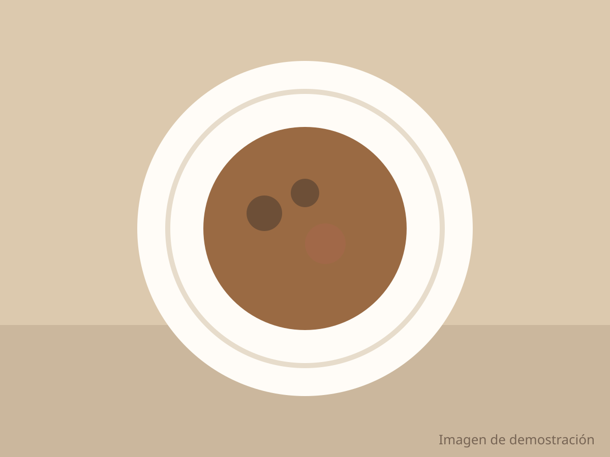

Lentejas estofadas
Un plato de cuchara sencillo y reconfortante, con verduras y pimentón.

Ingredientes
- 300 g lentejas pardinas
- 1 cebolla
- 2 zanahorias
- 1 pimiento verde
- 3 dientes de ajo
- 1 hoja de laurel
- 1 cucharadita pimentón dulce
- 3 cucharadas aceite de oliva
- 1 l agua
- Sal al gusto
Preparación
Pica la cebolla, el pimiento y las zanahorias en dados pequeños. Machaca los ajos.
Sofríe las verduras en el aceite a fuego medio durante 10 minutos, hasta que estén blandas.
Aparta del fuego, añade el pimentón y remueve. Incorpora las lentejas, el laurel y el agua.
Cuece a fuego suave unos 35 minutos, hasta que las lentejas estén tiernas. Rectifica de sal.
Consejos
- Si usas lentejas de bote, reduce la cocción a 15 minutos.
- Mejoran al reposar: están más ricas de un día para otro.